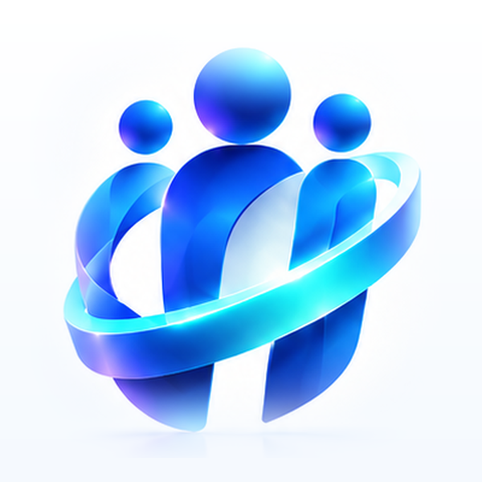

HRD Benefit
Urus BPJS Ketenagakerjaan & Kesehatan dalam satu aplikasi.
Portal resmi SHELTER
Masuk sebagai
Karyawan
Ajukan penggabungan saldo, koreksi data, dan pantau statusnya.
Saldo · Koreksi · Keluarga
Admin HRD
Proses pengajuan, buat laporan, dan kelola dokumen.
Pilihanmu akan diingat untuk pembukaan berikutnya
Memuat...
Ganti pilihan
HRD Benefit
Tidak ada koneksi internet
Periksa data seluler atau Wi-Fi, lalu coba lagi.
Coba lagi